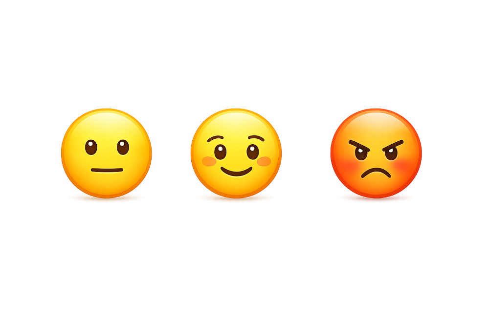

Histórico de Análises
Aqui você pode visualizar os comentários já analisados pela SentimentAPI, incluindo o sentimento identificado e a probabilidade associada a cada resultado. Cada análise é classificada automaticamente como positiva, neutra ou negativa, permitindo uma interpretação objetiva e confiável do feedback dos usuários.

🙂
"Eu adorei o atendimento, foi excelente!"
Positivo
Probabilidade: 0.87
Página 1 de 5
Total de comentários: 0